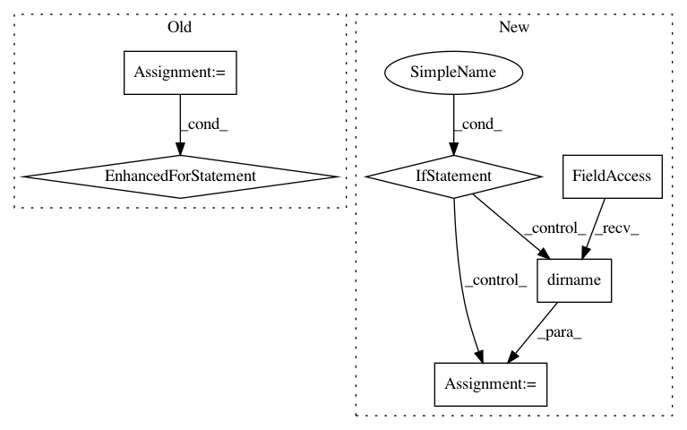

c9d0af542668df6fcaa51b5298237ea4a351f101,slm_lab/agent/__init__.py,Body,log_tensorboard,#Body#,235
Before Change
for k, v in last_row.items():
self.tb_writer.add_scalar(f"{k}/{idx_suffix}", v, frame)
// add tensorboard tracker for custom variables
for k, v in self.tb_tracker.items():
self.tb_writer.add_scalar(f"{k}/{idx_suffix}", v, frame)
// add network parameters
for net_name in self.agent.algorithm.net_names:
if net_name.startswith("global_") or net_name.startswith("target_"):
continue
net = getattr(self.agent.algorithm, net_name)
After Change
NOTE this logging is comprehensive and memory-intensive, hence it is used in dev mode only
"""
// initialize TensorBoard writer
if not hasattr(self, "tb_writer"):
log_prepath = self.spec["meta"]["log_prepath"]
self.tb_writer = SummaryWriter(os.path.dirname(log_prepath), filename_suffix=os.path.basename(log_prepath))
self.tb_actions = [] // store actions for tensorboard
logger.info(f"Using TensorBoard logging for dev mode. Run `tensorboard --logdir={log_prepath}` to start TensorBoard.")
trial_index = self.agent.spec["meta"]["trial"]
session_index = self.agent.spec["meta"]["session"]
if session_index != 0: // log only session 0
return
In pattern: SUPERPATTERN
Frequency: 3
Non-data size: 6
Instances
Project Name: kengz/SLM-Lab
Commit Name: c9d0af542668df6fcaa51b5298237ea4a351f101
Time: 2020-02-23
Author: kengzwl@gmail.com
File Name: slm_lab/agent/__init__.py
Class Name: Body
Method Name: log_tensorboard
Project Name: GoogleCloudPlatform/PerfKitBenchmarker
Commit Name: c4289c6035f95f6e3964273ebf43dd1788a25a9a
Time: 2016-04-20
Author: skschneider@users.noreply.github.com
File Name: perfkitbenchmarker/requirements.py
Class Name:
Method Name: _CheckRequirements
Project Name: home-assistant/home-assistant
Commit Name: 35b388edcedb35915ba6e20308520a2224e2c8eb
Time: 2016-09-07
Author: paulus@paulusschoutsen.nl
File Name: homeassistant/components/group.py
Class Name:
Method Name: setup